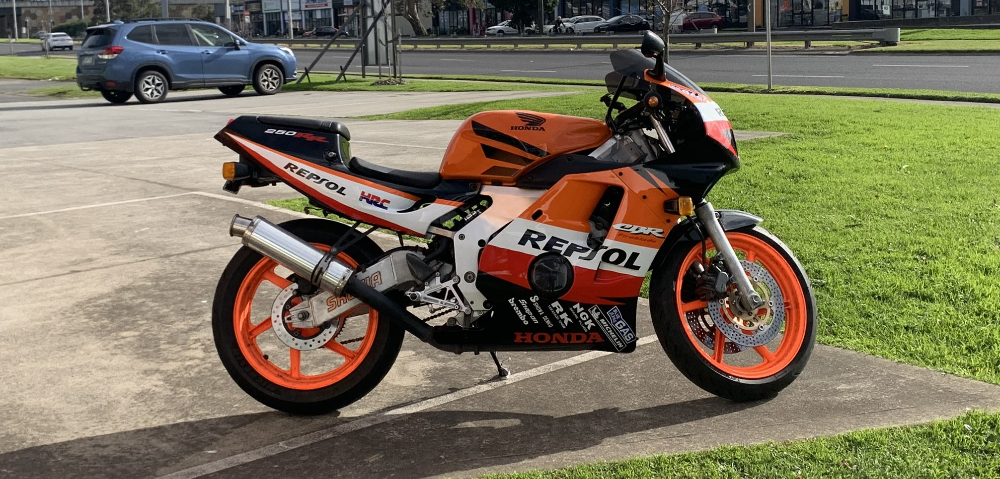

Headlight Wink Controller
Project
An Arduino-based controller and custom OEM-style switch to operate the pop-up headlights individually, enabling a selectable “wink” function.

6 entries
Vehicle components, mechanisms and hands-on engineering.
Explore category
1 entry
Coursework, team projects and engineering challenges.
Explore category
5 entries
Custom parts, modifications and radio-controlled builds.
Explore category
4 entries
Mechatronics, creative mechanisms and other experiments.
Explore categoryNo projects match all selected tags.
An Arduino-based controller and custom OEM-style switch to operate the pop-up headlights individually, enabling a selectable “wink” function.

Replacement components, interior accessories and wheel restoration.
Projects for this vehicle will be added here.
Projects for this vehicle will be added here.
Projects for this vehicle will be added here.
Projects for this vehicle will be added here.
Reverse-engineered a broken, discontinued climate control linkage and designed a replacement for the Ford Capri; produced and sold 21 units to other owners.

The 1989-93 Ford Capri never came with a cupholder, just a rectangular hole where it looks like one should be. I designed and 3D printed a solution, selling 19 units to other Capri owners.
A Quadlock compatible phone mount for the Ford Capri.

A restoration of four alloy car rims.
Recreating missing centre caps for the Ford Capri.
Low-profile, fully 3D-printable mount exploring a quick-release mechanism and compliant springs.

A Traxxas 4-Tec 2.0 built for straight-line speed, with custom aluminium parts and an 8S power system.

A nitro-to-electric conversion with custom motor mounts, a widened aluminium chassis, and a 6s brushless system.

Custom motor mounts, battery trays and upgrades pushing a 1/18 scale RC car to its limits.
Projects for this vehicle will be added here.
Project details and photographs to be added.
Project details and photographs to be added.
4 projects

A stamp with interchangeable heads for stamping initials into clay.

This Bluetooth speaker featured a hexagonal laser cut box, with electronics from an off-the-shelf DIY kit.
ESP8266 blind system with CAD-designed parts, 3D printing and repurposed printer hardware.

A servo-driven hatchling prop with an Arduino controller, sculpted features, and an airbrushed finish for a student horror film.